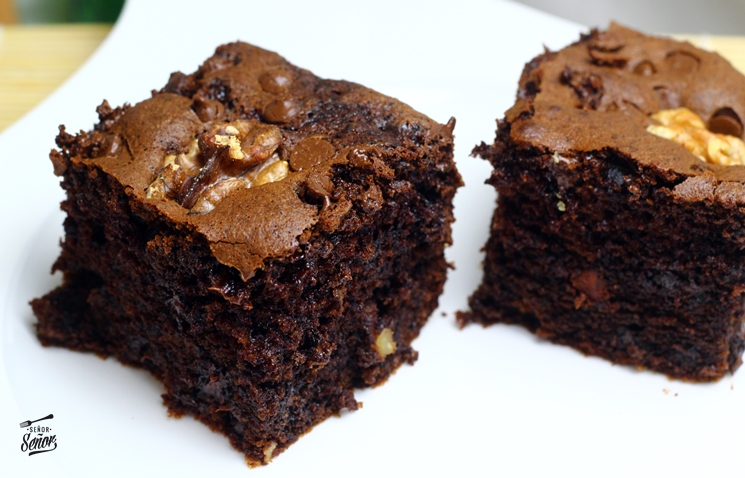

Receta 3: Brownies
Los brownies son un bizcocho tradicional de chocolate, muy humedo y esponjoso

- 200 g de chocolate negro
- 150 g de mantequilla
- 200 g de azúcar
- 3 huevos
- 100 g de harina
- 1 cucharadita de esencia de vainilla
- Una pizca de sal
Instrucciones:
- Precalienta el horno a 180°C.
- Derrite el chocolate y la mantequilla a baño maría o en el microondas.
- En un bol, bate los huevos con el azúcar hasta que la mezcla esté cremosa.
- Agrega el chocolate derretido y la esencia de vainilla, y mezcla bien.
- Incorpora la harina y la sal, mezclando suavemente hasta obtener una masa homogénea.
- Vierte la mezcla en un molde engrasado y hornea durante 25-30 minutos.
- Deja enfriar antes de cortar en porciones.
Volver a la página principal